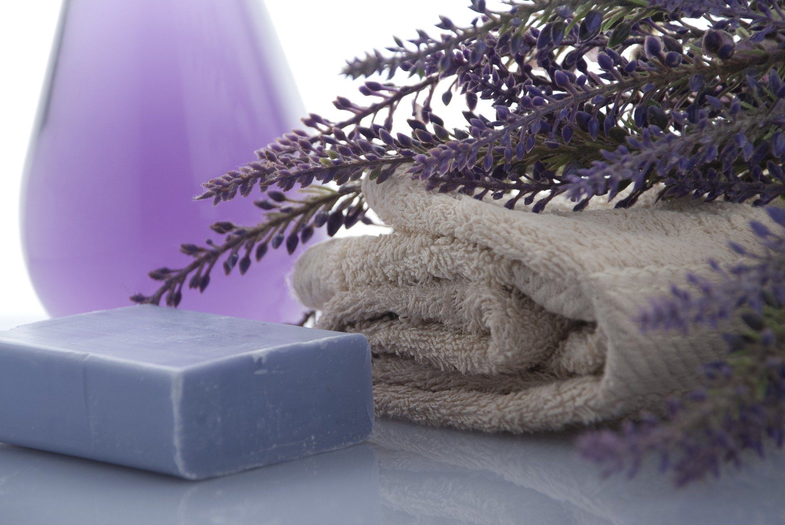
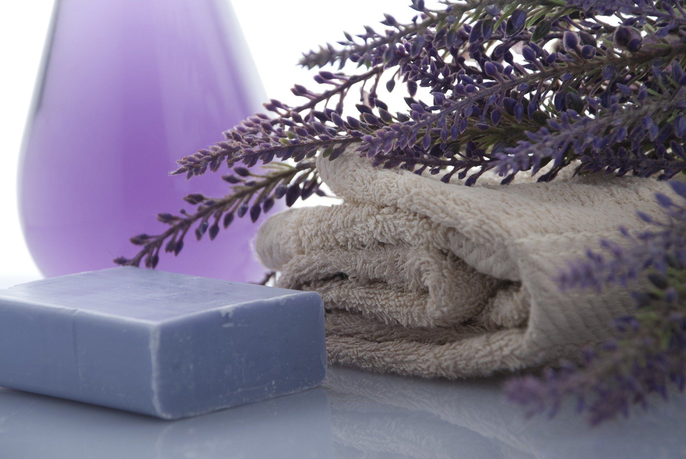
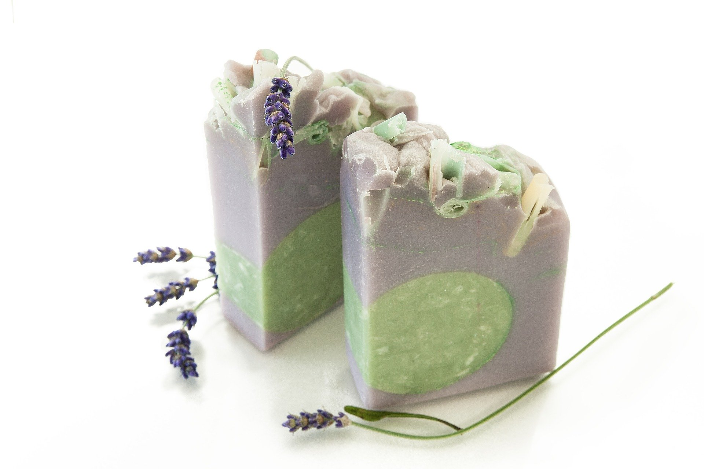

SOUVENIR SOAPS
Souvenir soaps are an ideal choice as a gift for different occasions.
They are playful, cheerful, fragrant and colorful.
We split our soaps into two groups, natural and glycerine soaps,
and they differ in their ingredients and the way they are made.
They are playful, cheerful, fragrant and colorful.
We split our soaps into two groups, natural and glycerine soaps,
and they differ in their ingredients and the way they are made.

Natural soaps
We make homemade soaps by hand using a cold soap making process.
The main ingredient we make of our soaps are various vegetable oils.
You can choose your own colors, scents and oils.
The main ingredient we make of our soaps are various vegetable oils.
You can choose your own colors, scents and oils.
Glycerin soaps
Glycerin soaps or merry soaps, as we call them from miles,
are made from the herbal glycerine soap base. melt & pour technique.
Glycerin soaps are a great choice if you want soaps of different shapes.
Unique soaps & Custom made
Each one is different, different from each other because it is made in your idea.
We make them exclusively to order. This way you choose the shape, colors and scents you want.
Gift packages
Personalized gifts are fully tailored to your wishes and occasion.
They may contain only one souvenir or consist of several different souvenirs.
The price of each package depends on the content selected and the order quantity.
They may contain only one souvenir or consist of several different souvenirs.
The price of each package depends on the content selected and the order quantity.
Thanksgiving for the wedding
Unique and personalized souvenir soaps are definitely a great choice as a Thanksgiving at your wedding. The names of the newlyweds can be engraved into natural souvenir soaps, while with glycerine souvenir soaps we can write personalized text of your choice on a decorative card. The colors and scent of the soaps themselves are tailored to your preferences. If you decide on scented candles, you choose the size, scent and color by yourself, and on the glasses or jars you choose we will also put the text of your choice.
Thanksgiving for Baptism, First Communion and Crisis
For these three festive occasions, we have designed unique angel-shaped souvenir soaps. You can choose between a girl's angel or a boy's angel depending on who approaches the sacred sacrament. These souvenir soaps are made from the vegetable glycerin soap base. melt & pour technique. The colors and scent of the soap are fully customized to your preferences as well as the packaging itself. So that we can guarantee that the soaps will be delivered by the desired date, it would be a good idea to place your order at least 14 days before. For more details about the production and the order, please send us an inquiry by clicking the box below.
Holiday gifts
If you are looking for a unique holiday souvenir (Christmas) our recommendation is souvenir glycerin soaps of a suitable holiday form. Ginger-shaped soap is especially popular, loved by both small and large. Also popular are soaps in the shape of a Christmas tree, a Christmas star, Santa and gifts. A good choice for the holiday gift is the scented apple-cinnamon candle. You can choose from a candle in a glass or jar. Cheer up your loved ones with our unique souvenirs and you will definitely not go wrong.
Our Products
The perfection of nature
 


